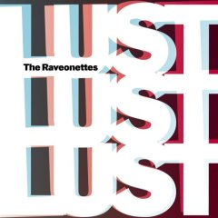

|
From Denmark Its... The Raveonettes. Sounding a little Sonic Youth mixed with a little Jesus and Mary Chain and even a little Pulp Fiction soundtrack, this was a fun find for me this year. Amy pointed out how many of the songs this year have a surf-vibe to them. As Tom would say - "hmm - that's interesting". The Raveonettes fuzzy, noisy sound may not be for everyone, but if you find that you like this song at all, check out the rest of the album. It's really quite good. Most track sound similarish to this one, so if this isn't your cup of tea, stay clear. Again, the cover art on this one facinates me. It looks much like the music sounds - fuzzy, distorted, and totally cool. |
 |